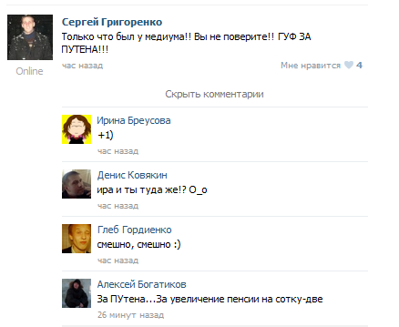
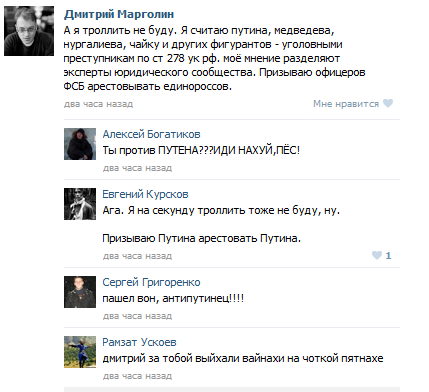
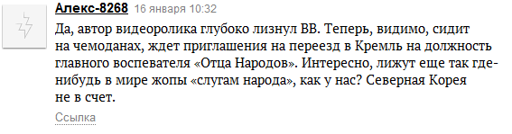
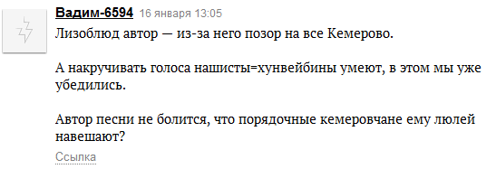

Во времена моего детства был такой прикол. Слова, правда «прикол» не было, но сам прикол был. Нужно было показать человеку палец и сказать, что дураку палец покажешь, он и засмеётся. Детство было беззаботное, о политике дети не знали. Интересовались судьбой резидента, про судьбу президента думать не думали. Смеялись, конечно.
Сегодняшнее детство не беззаботное — озабоченное. Уязвимые перед всем модным дети взяли за моду ругать власть. С одной стороны опьянённые возможностями ВКонтакта взрослые, с другой — не понимающие возможностей ВКонтакта дети. Ругать власть сейчас и модно и можно.
Судя по комментариям и осуждениям понимают абсурд ситуации и имеют желение шутить единицы — для этого нужен с одной стороны опыт интернет-общения, с другой жизненный опыт. Большинство противников действующей власти не по годам серьёзны. Покажешь им слово Путин и можно смело идти за поп-корном, смотреть как разрывает людей ненависть изнутри.
Касается это и группы во Вконтакте, которую перестали модерировать на выходных, и обсуждения ролика Сергея Баркова на «Ридусе», в случае с роликом, кажется вообще до единиц дошло, что к самой песне Сергей имеет то же отношение, что я к творчеству Алсу.




Почитаешь такие комментарии и думаешь, может это… может Путин-то ещё и ничего?